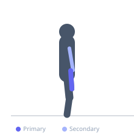
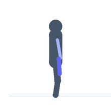

Exercise guide / Pinch Grip Farmer's Walk
Pinch Grip Farmer's Walk
A grip strength exercise performed by pinching the smooth edge of weight plates between the fingers and thumb and walking for distance or time. The pinch grip isolates the finger flexors and thumb adductors to a greater degree than a standard handle grip and builds crushing and pinching grip strength essential for many athletic and functional tasks.
Primary muscles
flexor carpi radialis
flexor carpi ulnaris
Secondary muscles
brachioradialis
brachialis
Stabilizers
transverse abdominis
erector spinae
gastrocnemius medial
Equipment
Weight Plates


Starting position
- Stand tall holding a weight plate in each hand, pinched between the fingers and thumb, with the smooth surface outward.
Setup
- Select a moderate weight plate (25lb or 35lb to start). Grip the smooth outer edge between fingers and thumb on each hand.
Steps
- Step 1: Stand tall with the plates pinched securely.
- Step 2: Walk forward for the prescribed distance or time, maintaining an upright posture.
- Step 3: Keep the shoulders level and the core braced throughout.
- Step 4: At the end of the distance, carefully set the plates down.
Coaching cues
- Pinch hard and walk tall
- Keep the shoulders level
Breathing
- Breathe steadily throughout the walk.
Range of motion
- Walk for the prescribed distance (10-30m) or time (20-60 seconds).
Tempo
- Continuous walking — controlled steps
Common mistakes
- Allowing the torso to lean or the shoulders to drop
- Squeezing too hard and fatiguing the grip prematurely
Safety
- Set the plates down carefully — do not drop them
- Use chalk to improve grip on smooth plates
Training
- strength: 3–8 reps
- endurance: 15–25 reps
- strength: 3–5 sets
- endurance: 2–3 sets
- Rest: {'strength': 180, 'endurance': 45}